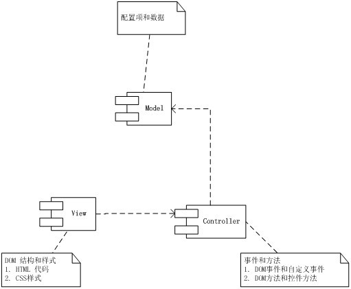
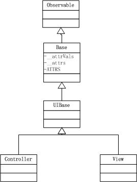

欢迎使用BUI！在这一章节里，我们将学习以下内容:
首先我们需要弄明白在页面中MVC分别指的什么?我们来看下图:

所以从MVC的角度来说：
BUI中所有的控件，Controller和View是分离的，每个控件都有对应的Controller类和View类，数据操作比较复杂的List、Grid和Tree,都有独立的Model：Store

Controller和View都是继承自UIBase类，我们在上一章已经进行过UIBase的讨论,本章主要介绍有关Controller的实现和如何基于Controller实现新的控件。
Controller类的定义代码如下：
上面的代码只是显示了Controller类的定义未显示具体的逻辑，详细的代码请参看Controller 代码，几点说明：
UIBase上有一个静态函数extend方法，同时每个通过这个方法实现的类上也会存在此静态方法
var A = BUI.UIBase.extend({});//A从BUI.UIBase继承而来，A.extend静态方法会自动生成
var B = A.extend({}); //B 是A的子类，也会自动生成B.extend静态方法
BUI.augment方法xclass,用于唯一的标示一个控件类，在控件的子控件中会详细介绍
var Controller = function(config){
Controller.superclass.constructor.call(this,config);
};
BUI.extend(Controller,BUI.UIBase); //实现继承
BUI.mixin(Controller,[UIBase.Decorate,UIBase.Tpl,UIBase.ChildCfg,UIBase.KeyNav,UIBase.Depends]); //实现扩展
BUI.mix(Controller,{ //复制静态属性
ATTRS : {}
});
//注册xclass
BUI.Component.Manager.setConstructorByXClass('controller', {
constructor: Controller
});
上面代码中ATTRS代表控件的默认属性，Controller初始化时将配置参数转换成属性,属性的详细信息请参考：配置和属性，同时也有自己专有的2个属性：
上面2个属性的具体介绍在后面的章节里会有详细的介绍
注意：实例化一个类后必须调用类的render方法
上面的代码中Controller类实现了以下扩展：
下面只是简单的列表，未显示从父类继承来的方法，详细信息请查看API文档
学完本章后，你可以继续学习View 类更深入的了解控件的基类